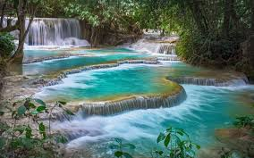

Cascadas Kuang Si
Hermosas cascadas de agua color turquesa ubicadas cerca de Luang Prabang.
Pha That Luang
El monumento más importante de Laos y símbolo nacional del país.

Luang Prabang
Ciudad histórica reconocida por sus templos y arquitectura tradicional.

Vang Vieng
Destino famoso por sus montañas, cuevas y actividades al aire libre.